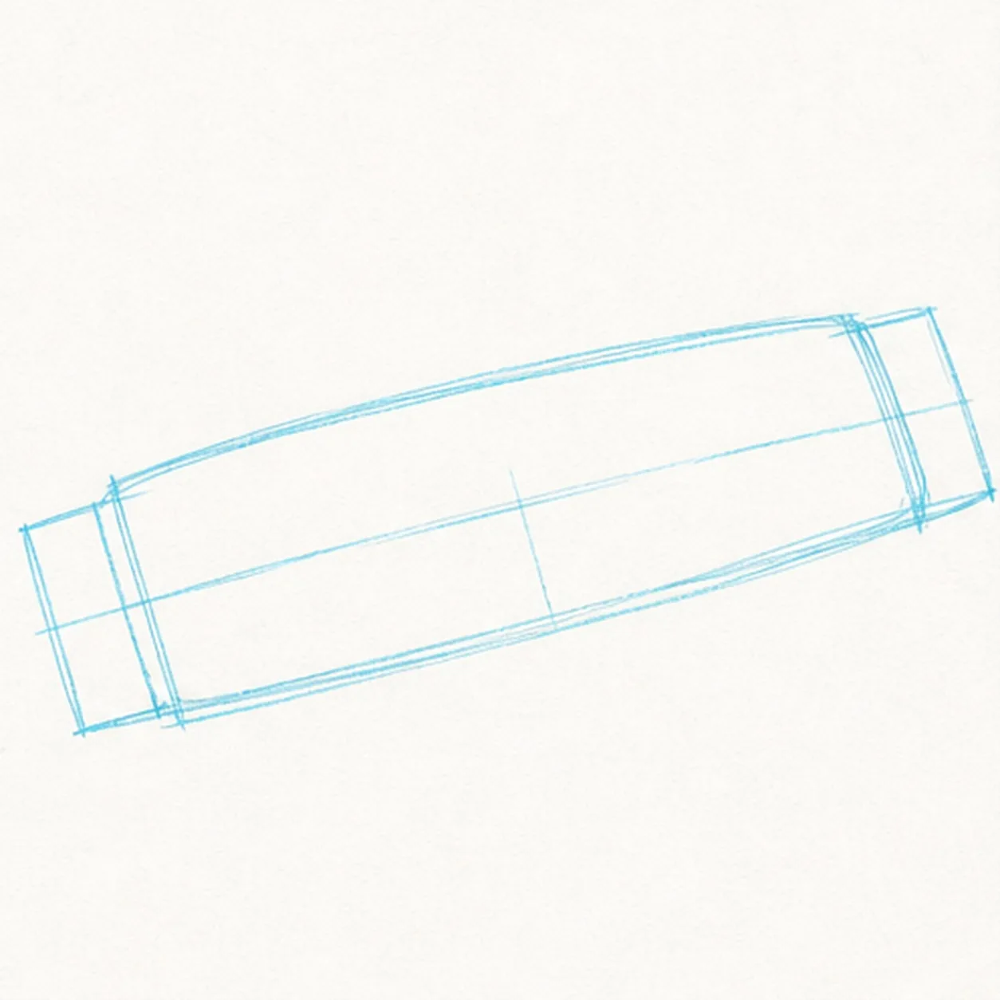
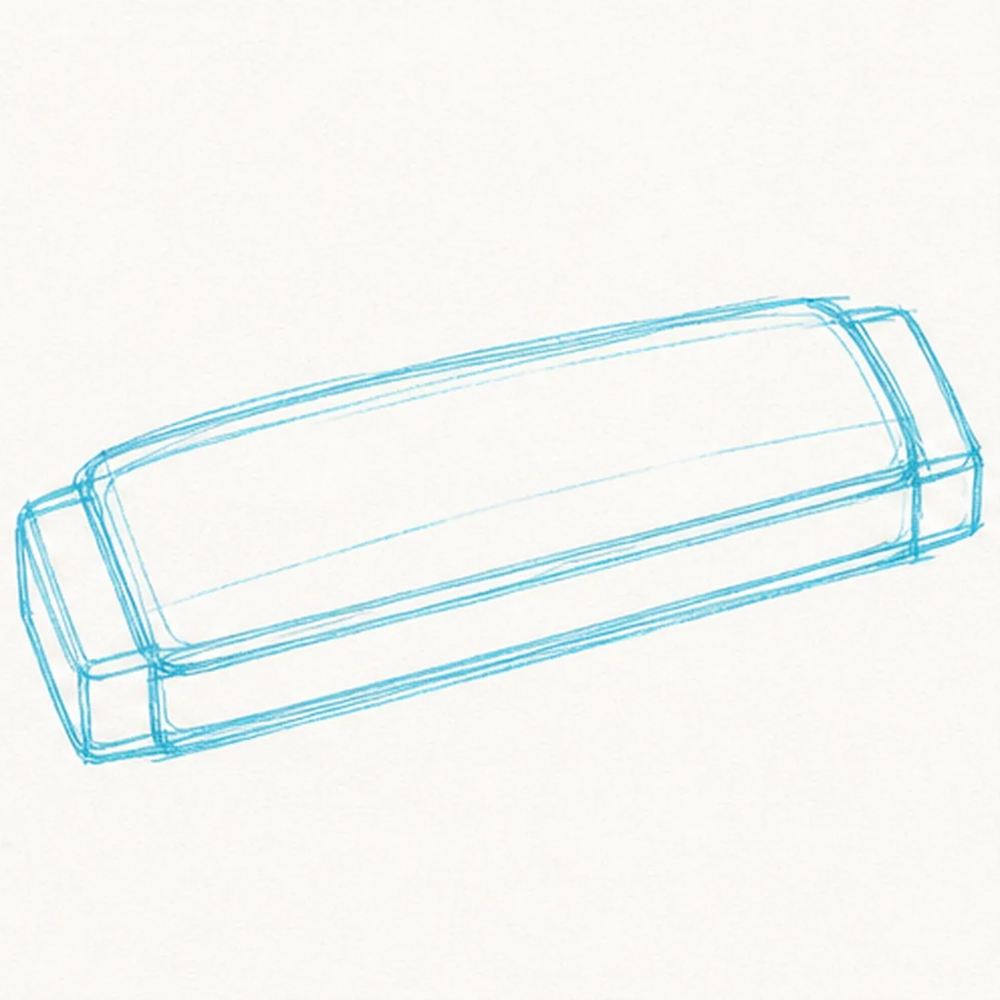
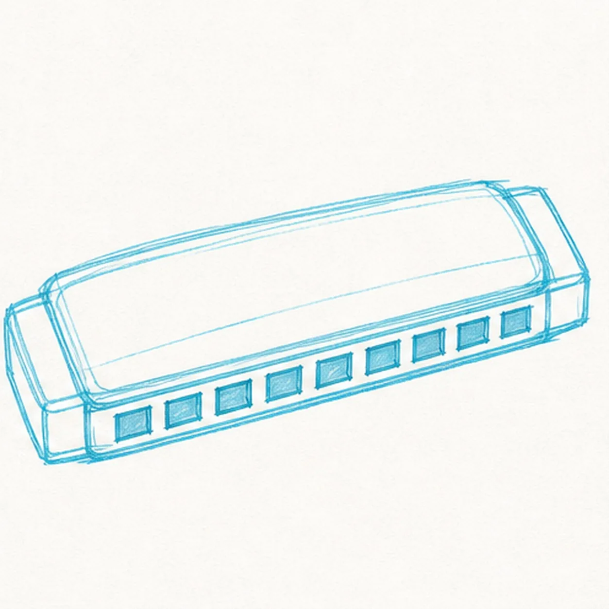
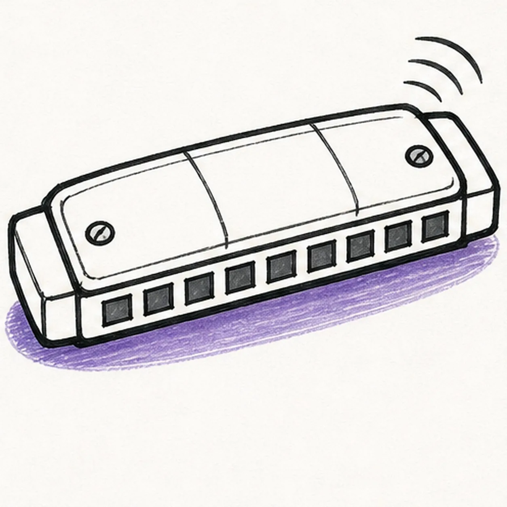
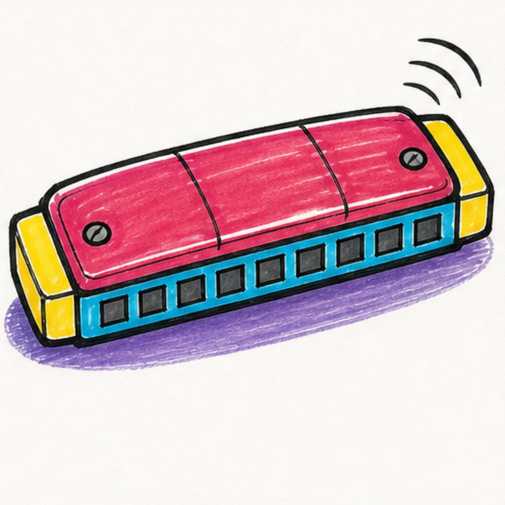

Felt-tip marker mode
Let's draw a harmonica
Treat this as one playful practice round: sketch the idea loosely, simplify the shapes, then commit with confident marker outlines and bright fills.
-
01

Block the low music box
Draw one light center axis and wrap it with a long low rounded box in a gentle three-quarter view, reserving a compact footprint at each end.
Marker tip: Ghost both long edges before touching down and compare the narrow band of paper between them. Keep both end areas pale so the caps can cover those corners without burying finished detail.
-
02

Layer the covers and end caps
Add the rounded top cover, the lower mouth band, and exactly two compact end caps around the established body.
Marker tip: Rotate the page for each long cover edge and pull it in one confident pass. Check that both caps meet the body rather than floating beyond it.
-
03

Divide eight mouth holes
Place exactly eight rectangular openings in one even row along the near edge between the two established end caps.
Marker tip: Mark the first and eighth holes, divide the remaining distance by eye, and keep the small cyan spaces between holes wider than the black outline.
-
04

Add hardware and a bright note
Ink the existing silhouette, add exactly two round screws and two short top-cover seams, then draw exactly three sound arcs and one shallow oval shadow.
Marker tip: Keep the two screws near opposite ends and pull the three sound arcs as a related family. Leave a slim highlight path on the cover before the marker fills arrive.
-
05

Ink and color the harmonica
Thicken every established contour and fill the top raspberry, mouth band cyan, both end caps yellow, all eight holes and both screws cool gray, and the shadow violet.
Marker tip: Pull marker strokes along the instrument's length so the streaks reinforce the perspective. Let each bright color dry before strengthening the neighboring black edge.
-
06

Play up the bold finish
Strengthen the keeper outlines and clarify the established cover plates, two caps, eight holes, two screws, two seams, three sound arcs, marker fills, highlights, and shadow.
Marker tip: Count eight mouth holes, two screws, two seams, and three sound arcs, then stop. A face, lettering, musical-note symbol, hand, microphone, sticker edge, or badge frame would crowd the clean instrument shape.

![Handmade marker drawing of one cartoon jack-in-the-box with a three-quarter toy box, open coral lid, centered cream zigzag spring, round cream face, broad three-lobed ruff, floppy two-point dusty-cobalt and soft-coral cap, one crescent wink, one wide oval eye looking sideways, one raised brow, one off-center black grin with exactly two square cream teeth, one side crank with coral handle, exactly two curved motion arcs, two diagonal front-panel divisions, dusty-cobalt, soft-coral, and pale-butter fills, thick imperfect black outlines, visible marker streaks, and warm-paper gaps; no text, confetti, sticker outline, or badge frame](../assets/cartoon-jack-in-the-box-finished-v1.webp)
![Handmade marker drawing of one cheeky near-front cartoon cheetah cub peeking over a muted deep-green ledge with exactly two rounded forepaws, three black toe lines on each cream paw tip, a golden-ochre head and visible neck, two uneven rounded ears with dusty-coral interiors, one wide almond eye and one narrower half-lidded eye glancing sideways, one raised brow, one compact black nose, a divided cream muzzle, one crooked smirk with one small triangular canine, exactly two black facial tear stripes, irregular solid black spots across the head, ears, neck, and paws, thick imperfect black outlines, visible marker strokes, and warm-paper highlight gaps; no full body, tail, rosette, scenery, text, sticker edge, or badge frame](../assets/cheetah-print-pattern-finished-v2.webp)